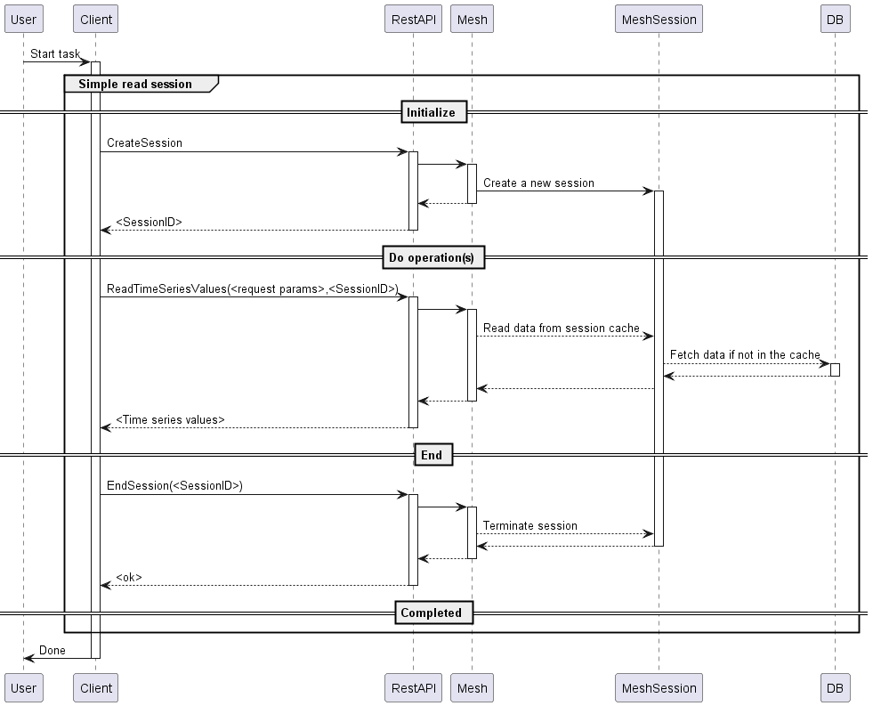
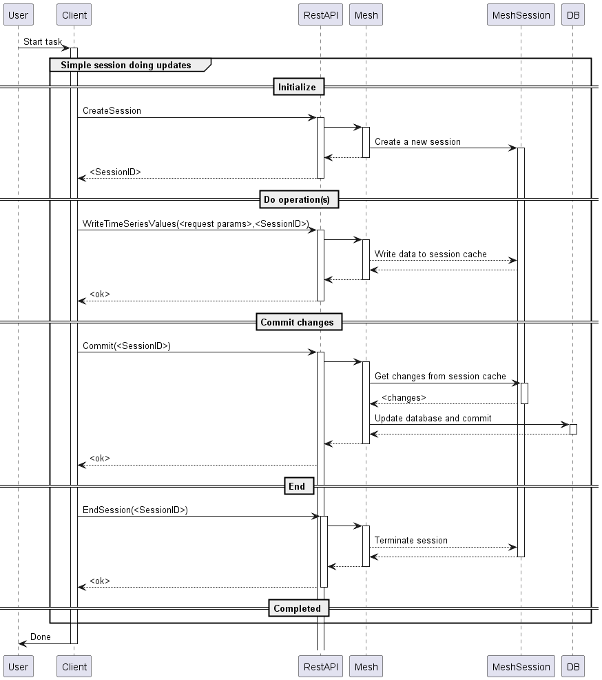
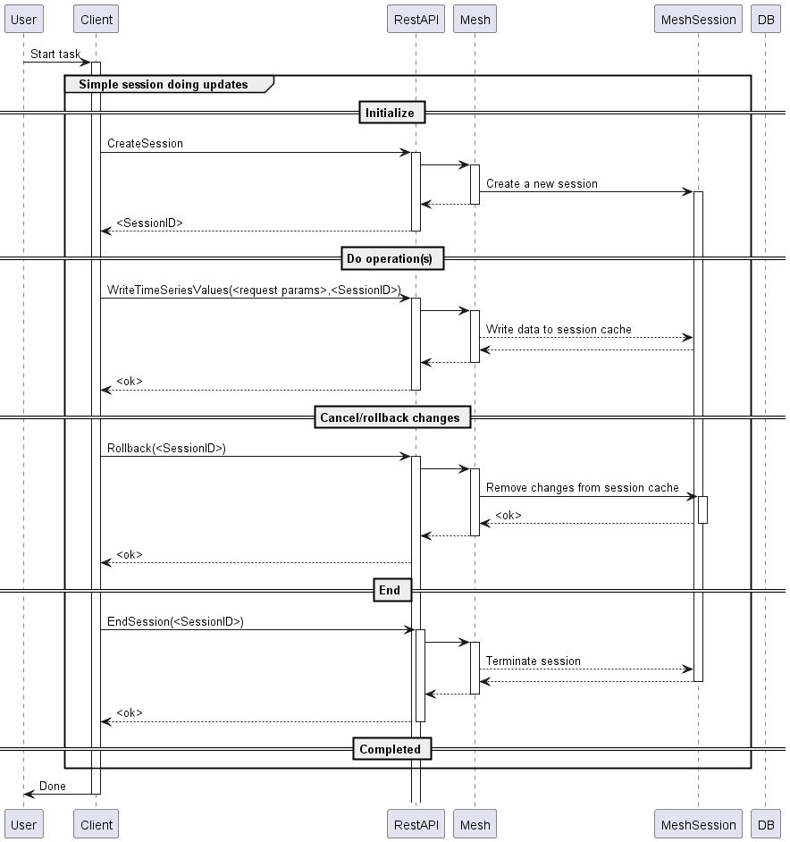
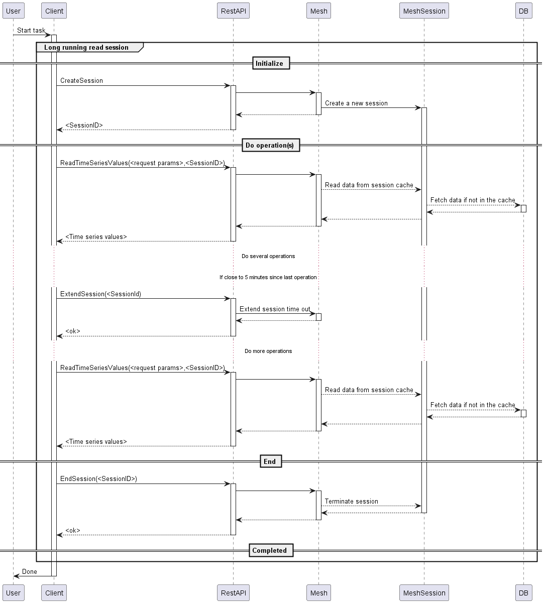
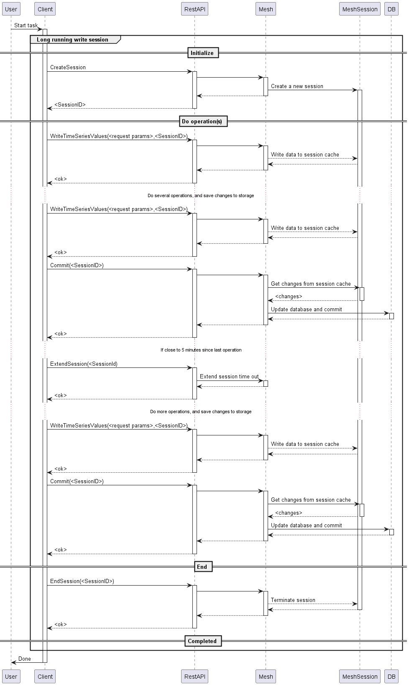

Introduction
The Volue Mesh REST API is an official REST API built on top of the public gRPC interface to Mesh. It provides a RESTful interface for accessing Mesh energy data management functionality. The service is built with ASP.NET Core 8.0 and can be hosted using either IIS or Kestrel web server.
Access to the Mesh REST API is normally: https://server:7060 where server is the name of the server where the Mesh REST API service is running.
The Mesh REST API also offers a Swagger user interface to manually test the usage. This Swagger interface is available as: https://server:7060/swagger/index.html. Note! The Swagger interface may be turned off in the configuration.
Session Management Pattern
The API requires session-based operations:
- CreateSession - Initialise a session with Mesh
- Perform operations (queries/writes) using the sessionId
- Commit or Rollback changes if writes were made
- CloseSession - End the session
Exception: When the configuration parameter AutoAddSession is true (testing only), sessions are automatically created per operation.
Security Architecture
Supports three security models (using the configuration parameter SecurityModel):
- None: No authentication
- OAuth2: JWT bearer tokens validated and forwarded to Mesh
- Kerberos: Windows authentication (requires IIS for user impersonation)
The authentication scheme uses a policy-based multi-scheme approach that inspects the Authorization header to determine which authentication method to apply.
HTTPS endpoints are required when security is enabled. HTTP endpoints will cause startup failure with security enabled when using Kestrel.
Use OAuth2 security token
The OAuth2 security token is added as a JSON Web Token (JWT) using the Bearer scheme and the payload is Base64Url encoded (https://en.wikipedia.org/wiki/JSON_Web_Token).
The JWT token looks typically something like this (removed parts of secrets with dots (.)):
{
"aud": "api://43fe....-....-....-....-......6110dd",
"iss": "https://sts.windows.net/32b9....-....-....-....-......5714a9/",
"iat": 1713880364,
"nbf": 1713880364,
"exp": 1713884264,
"aio": "E2Ng......................syAA==",
"appid": "3ca2....-....-....-....-........0233",
"appidacr": "1",
"idp": "https://sts.windows.net/32b9....-....-....-....-.......714a9/",
"oid": "61e7....-....-....-....-......f89b70",
"rh": "0.AUgA..........................................0LAQA.",
"roles": [
"python"
],
"sub": "61e7....-....-....-....-......f89b70",
"tid": "42b0....-....-....-....-......5714a9",
"uti": "_m01..............IaAA",
"ver": "1.0"
}
The content of the header could look like the following:
Authorization: Bearer eyJhbGci...<snip>...yu5CSpyHI
Use Kerberos user information
The Kerberos user information is also using the Bearer access token:
- If the request already has a Bearer access token, this token will be forwarded directly to the Mesh service.
- If the request is not having an access token, but there is a defined user identity in the request, this user is used to get the Bearer token from the Mesh service, and the received Bearer token is added to the request to the Mesh service.
The content of the header with an external added Bearer token must look like the following:
Authorization: Bearer eyJhbGci...<snip>...yu5CSpyHI
API Versioning
Uses Asp.Versioning with:
- Default API version: 1.9
- Version in URL segment:
/api/v1/... - Also supports header-based versioning:
x-api-version - Swagger UI shows all available API versions
Mesh session usage
When using the API it is necessary to create a session in Mesh to "work" within. If you don't have a session you will not be able to execute any operation. Each session has an automatic time-out of 5 minutes, and if there is no activity against the session within such a timeframe, the session is automatically terminated without storing any changes in that session.
A way to prevent the automatic timeout to take place, it is possible to call the ExtendSession method which will make the session active 5 more minutes.
Commit and rollback functionality
The data within a session are automatically updated with changes committed from other sessions in Mesh and changes committed directly to the database from outside of Mesh.
User changes that are added to a session are not not shared outside of the session before it is committed to the database using the Commit method. This method will save all changes added since the last Commit or Rollback operation.
If the changes added to the session should not be performed, the Rollback method will remove all changes added since the last Commit or Rollback operation.
Short or long running sessions
Each session will typically have overheads related to functionality like:
- Create the session,
- Load data into the session,
- Perform calculations, and
- Closing the session and cleaning up memory.
Within a session, data is automatically updated from stored changes and recalculation is only done for the parts that have changed since the last read operation of the same data information.
Note! It is recommended to use long-running sessions instead of frequently creating new sessions for operations yielding the same data information.
Sequence diagrams
Simple read operation
This is describing a way to execute one or more read operations in an operation that completes fairly quickly. The example is using the ReadTimeSeriesValues method, but is valid for any API method that is not changing data.

Simple write operation with commit
This is describing a way to execute one or more write operations in an operation that completes fairly quickly. The example is using the WriteTimeSeriesValues method, but is valid for any API method. The Commit method will store all changes added in the session to the database.

Simple write operation with rollback
This is describing a way to execute one or more write operations in an operation that completes fairly quickly. The example is using the WriteTimeSeriesValues method, but is valid for any API method. The Rollback method will revert all changes added in the session.

Long running read operations
This is describing how a long-time running session that reads information from Mesh can be implemented. The example is using the ReadTimeSeriesValues method, but is valid for any API method that is not changing data.

Long running write operations
This is describing how a long-time running session that both reads and writes information from and to Mesh can be implemented. The example is using the WriteTimeSeriesValues method, but is valid for any API method.

Examples of API usage
Below is example code of how to use the generated C# code (i.e., MeshRestAPI) from the swagger.json information to access the Mesh service with OAuth2 authentication and authorisation.
Note! All strings in brackets ("[...]") must be replaced with information valid for the environment where the code is run.
using System.Numerics;
using System.Net.Http.Headers;
using Microsoft.Identity.Client;
using MeshRestAPI;
internal class Program
{
static public async Task<string> GetAccessTokenAsync()
{
var scopes = new[] { "api://[tenantID]/.default" };
var authority = $"https://login.microsoftonline.com/[company].onmicrosoft.com/oauth2/v2.0/token";
// Make sure you inject IConfiguration _configuration to read AppSettings.json values
var app = ConfidentialClientApplicationBuilder
.Create("[clientID]")
.WithClientSecret("[clientSecret]")
.WithAuthority(authority)
.Build();
var result = await app.AcquireTokenForClient(scopes)
.ExecuteAsync();
return result.AccessToken;
}
private static async Task Main(string[] args)
{
var httpClient = new HttpClient();
string accessToken = await GetAccessTokenAsync();
Console.WriteLine($"AccessToken: {accessToken}");
httpClient.DefaultRequestHeaders.Authorization = new AuthenticationHeaderValue("Bearer", accessToken);
// The port number must match the port of the gRPC server.
var api = new MeshRestAPI.MeshRestAPI("http://[server]:7060", httpClient);
// 1. Just checking connection using the GetVersion method.
var reply = await api.GetVersionAsync();
Console.WriteLine($"ApiVersion: {reply.ApiVersion}, MeshVersion: {reply.MeshVersion}");
// 2. All other operations needs to be within an active session.
// Create a new session using the CreateSession method.
var sessionId = await api.CreateSessionAsync();
Console.WriteLine($"Session ID = {sessionId}");
try
{
// 3. To do searches, there is a need to have a start node defined.
// The ListModel methods returns the top level models.
var listModelsResponse = await api.ListModelsAsync( sessionId );
if (listModelsResponse != null)
{
Console.WriteLine("Models found:");
foreach (var model in listModelsResponse)
{
Console.WriteLine($"\t{model}");
}
}
// 4. Do a search for objects using the SearchForObjects method.
var startObjectPath = "Model/[Company]";
var query = "*[.Type=\"Reservoir\"]";
var searchObjectResponse = await api.SearchForObjectsAsync( startObjectPath, query, sessionId, 0);
Console.WriteLine("Reservoirs found:");
string reservoirToUse = "";
string tsToUse = "";
foreach (var reservoir in searchObjectResponse)
{
Console.WriteLine($"\t{reservoir.Path}");
if (reservoirToUse.Equals(""))
{
reservoirToUse = reservoir.Path;
tsToUse = reservoir.Path + ".ReservoirLevel_historical";
}
}
// 5. Do a search for a specific attribute using the SearchForAttribute method.
query = "*[.Type=Unit].ReservoirLevel_historical";
var searchAttributeResponse = await api.SearchForAttributesAsync( reservoirToUse, query, MeshAttributeValueEnum.Timeseries, sessionId, 0);
Console.WriteLine("Attributes found:");
foreach (var attribute in searchAttributeResponse)
{
Console.WriteLine($"\t{attribute.Path} - valueType={attribute.ValueType}");
if (string.IsNullOrEmpty(tsToUse))
{
tsToUse = attribute.Path;
}
}
// 6. Get all information for a specific object using the GetObject method.
var getObjectResponse = await api.GetObjectAsync(reservoirToUse, null, sessionId);
Console.WriteLine($"Time series attributes for object {reservoirToUse}");
foreach (var attr in getObjectResponse.Attributes)
{
if (attr.ValueType == MeshAttributeValueEnum.Timeseries)
{
Console.WriteLine($"\t{attr.Name}");
foreach (var val in attr.Value)
{
if (val != null && val?.TimeSeriesValue?.TimeseriesResource?.TimeseriesKey > 0)
{
Console.WriteLine($"\t\t{val.TimeSeriesValue.TimeseriesResource.TimeseriesKey}");
if (string.IsNullOrEmpty(tsToUse))
{
tsToUse = attr.Path;
}
}
}
}
}
// 7. Get values for a specific time series using the ReadTimeSeriesValuesMultiRaw method.
var valuesFrom = new DateTime(2024, 7, 1, 0, 0, 0, DateTimeKind.Utc);
var valuesTo = new DateTime(2024, 7, 2, 0, 0, 0, DateTimeKind.Utc);
var date1 = new DateTime(2024, 7, 1, 6, 0, 0, DateTimeKind.Utc);
var date2 = new DateTime(2024, 7, 1, 7, 0, 0, DateTimeKind.Utc);
var val1 = Double.NaN;
var val2 = Double.NaN;
int? q1 = 0, q2 = 0;
Console.WriteLine($"Time series values found for {tsToUse}:");
var tsToRead = new List<MeshTsId>();
tsToRead.Add(new MeshTsId(){Path = tsToUse});
var readTimeseriesMultiResponse = await api.ReadTimeSeriesValuesMultiRawAsync(valuesFrom, valuesTo, sessionId, tsToRead);
foreach (var readTimeseriesResponse in readTimeseriesMultiResponse.ToList())
{
Console.WriteLine($"\tTS={readTimeseriesResponse.Id.Path}, resolution={readTimeseriesResponse.Resolution}");
foreach (var val in readTimeseriesResponse.Values)
{
if (val != null)
{
Console.WriteLine($"\t\t{(val.Date.HasValue ? val.Date : null)} - {(val.Value.HasValue && !double.IsNaN(val.Value.Value) ? val.Value : null)} ({val.Status})");
if (val.Date.HasValue && val.Value.HasValue && !double.IsNaN(val.Value.Value))
{
if (val.Date.Value == date1)
{
val1 = val.Value.Value;
q1 = val.Status;
}
else if (val.Date.Value == date2)
{
val2 = val.Value.Value;
q2 = val.Status;
}
}
}
}
}
// 8. Write values for a specific time series using the WriteTimeSeriesValuesRaw method.
// And check that the values are written using the ReadTimeSeriesValuesRaw method.
var values = new List<MeshValue>();
values.Add(new MeshValue(){ Date = date1, Value = !double.IsNaN(val1) ? val1 + 1.234 : 1.234, Status = q1 });
values.Add(new MeshValue(){ Date = date2, Value = !double.IsNaN(val2) ? val2 + 0.1234 : 0.1234, Status = q2 });
var writeTimeSeriesMultiRequest = new List<MeshTimeseriesValues>();
writeTimeSeriesMultiRequest.Add(new MeshTimeseriesValues()
{
Id = new MeshTsId(){Path = tsToUse},
Interval = new MeshInterval(){
StartTime = new DateTime(2024, 7, 1, 6, 0, 0, DateTimeKind.Utc),
EndTime = new DateTime(2024, 7, 1, 7, 59, 59, DateTimeKind.Utc)
},
Values = values
});
var writeTimeSeriesMultiResponse = await api.WriteTimeSeriesValuesMultiRawAsync(sessionId, writeTimeSeriesMultiRequest);
foreach (var success in writeTimeSeriesMultiResponse.ToList())
{
Console.WriteLine($"Write operation was {(success ? "successful" : "failed")}");
}
readTimeseriesMultiResponse = await api.ReadTimeSeriesValuesMultiRawAsync(valuesFrom, valuesTo, sessionId, tsToRead);
foreach (var readTimeseriesResponse in readTimeseriesMultiResponse.ToList())
{
Console.WriteLine($"\tTS={readTimeseriesResponse.Id.Path}, resolution={readTimeseriesResponse.Resolution}");
foreach (var val in readTimeseriesResponse.Values)
{
if (val != null)
{
Console.WriteLine($"\t\t{(val.Date.HasValue ? val.Date : null)} - {(val.Value.HasValue && !double.IsNaN(val.Value.Value) ? val.Value : null)} ({val.Status})");
}
}
}
// 9. Do a rollback to avoid storing the changed values to the datastore.
var rollbackResponse = await api.RollbackAsync(sessionId);
Console.WriteLine($"Rollback performed with {(rollbackResponse ? "success" : "failed")}");
}
catch (Exception ex)
{
Console.WriteLine($"Failed with exception: {ex}");
}
finally
{
var endSessionResponse = await api.CloseSessionAsync(sessionId);
Console.WriteLine("Session is closed");
}
}
}